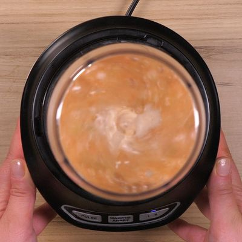
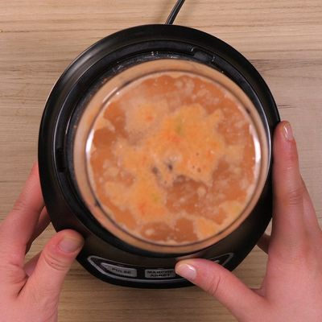
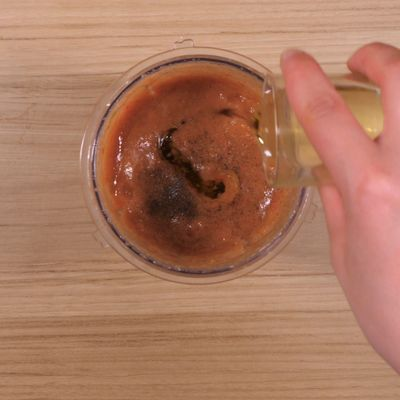
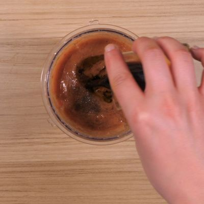
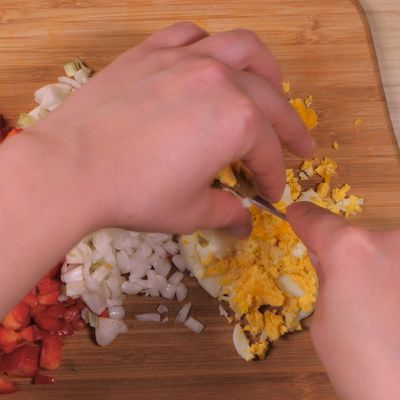
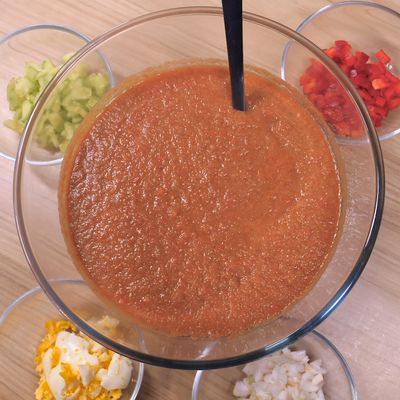

Couper les tomates, 1 poivron vert et un rouge, 1 concombre, l'oignon et l'ail, passer le tout au mixer.
Ajouter le pain de mie, mixer une nouvelle fois.
Assaisonner avec sel,poivre, 4 cuillères à soupe d'huile d'olive, 2 cuillères à soupe de vinaigre de Xérès et de piment (selon les goûts).
Laisser reposer au frais au minimum 2 heures.
Détailler en petits dés poivrons et concombre restants ainsi que les oignons nouveaux. Ecraser les oeufs durs à la fourchette. Parsemer la soupe de basilic ciselé.
Disposer les garnitures dans des ramequins et chacun accommodera son gaspacho selon ses goûts.
